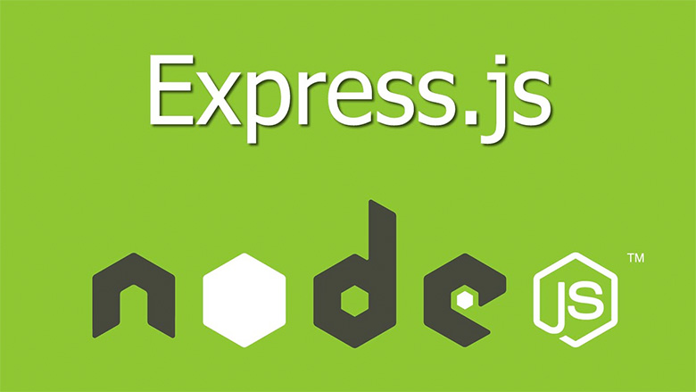
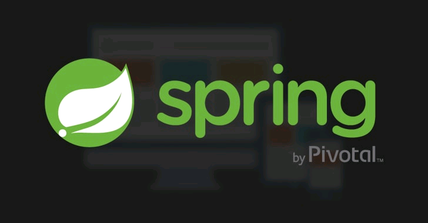
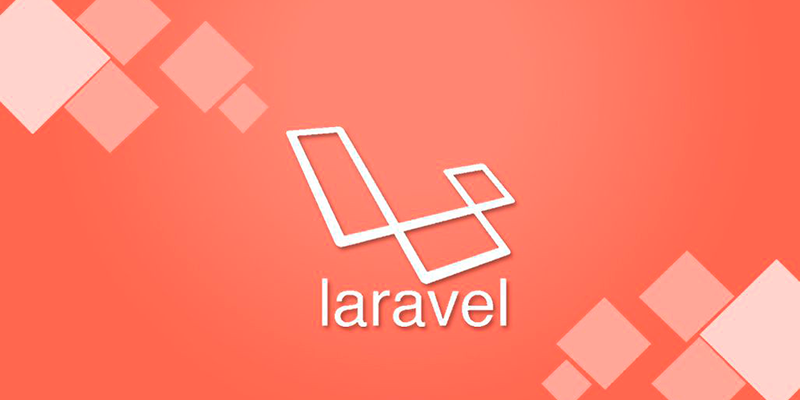
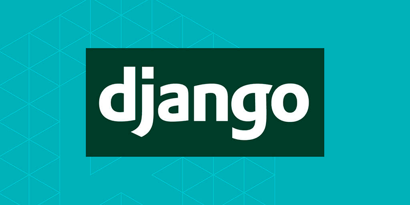

Стандарты веб-разработки постоянно растут вместе со сложностью современных технологий. Изобретение собственных велосипедов теперь занимает слишком много времени и сил. На помощь растерянному девелоперу спешат фреймворки, готовые снять с его плеч груз забот.
Но тут появляется новая проблема: этих фреймворков так много, что глаза разбегаются. Для фронтенда и бэкенда, гибкие и жесткие, легкие и всеобъемлющие, на PHP, Python, Java, JavaScript (да-да, бесчисленные JavaScript фреймворки). В общем, на любой вкус.
Чтобы ваши глаза не убегали далеко, держите компактную подборку самых лучших инструментов для веб-разработки.
JavaScript
Angular.js
Angular — это JavaScript фреймворк от Google, разработанный специально для создания динамических веб-приложений. Он пользуется огромной популярностью уже почти десять лет. Работая с Angular, вы сможете создавать интерфейсные приложения без необходимости применять другие плагины или фреймворки.

Его структура включает в себя целый ряд интересных функций. Вот некоторые из них:
- Используя шаблоны, вы можете показывать информацию из модели и контроллера.
- Angular поддерживает архитектуру MVC. В результате разработчик может просто разделить приложение на MVC компоненты. Все остальное будет управляться средствами фреймворка.
- Все выражения похожи на фрагменты кода, заключенные в фигурные скобки. Они не используют циклы и условные выражения. Наоборот — применяются для форматирования и отображения данных.
- Все эти функции являются частью платформы, которая позволит вам построить отличный веб-сайт. Вот лишь некоторые примеры площадок, разработанных с помощью этого фреймворка: Netflix, Freelancer.com, GoodFIlms и т.д.
Express JS
Express — это минималистичный и гибкий веб-фреймворк для приложений Node.js, предоставляющий обширный набор функций для мобильных и веб-приложений.
Express, как хорошо известно, развивается своим путём, в отличие от других фреймворков, во многом опирающихся на Rails, но также много позаимствовал из другого Ruby-фреймворка под названием Sinatra. Концепция простая: фреймворк предоставляет достаточно возможностей для запуска и работы «на лету», не требуя много времени на подготовку.
Он существенно упрощает разработку веб-приложений на базе Node. Ниже приведены некоторые из основных функций фреймворка Express.
- Позволяет настроить посредников для ответа на запросы HTTP.
- Определяет таблицу маршрутизации, которая используется для выполнения различных действий на основе метода HTTP и URL-адреса.
- Позволяет динамически создавать HTML-страницы на основе передачи аргументов шаблонам.
React
Не очень правильно называть React фреймворком, это скорее библиотека компонентов для веб-разработки. Однако его значение так велико, что исторически ни одно сравнение без него не обходится.
Именно React от Facebook ввел "моду" на компонентную архитектуру и виртуальный DOM.
Разработка ведется на особом наречии JavaScript – JSX. Это смесь привычного JS с таким же привычным HTML. И в целом это очень интерфейс-ориентированный инструмент, существенно упрощающий работу с веб-страницей в браузере.
React можно использовать не только на клиенте, но и на стороне сервера.
Преимущества:
- Общая кодовая база.
- Максимально похож на нативный.
- Быстрая инициализация.
- Большое cообщество.
Ember
В 2015 году Ember был назван лучшим JavaScript-фреймворком. Четыре года спустя он все еще популярен (что удивительно в бурном и непостоянном JS-мире). Сообщество продолжает расширяться, появляются новые функции и релизы. Инструмент используется в Google, Microsoft, Heroku и Netflix.
Из коробки в Ember доступна двусторонняя привязка данных, а также множество полезных функций и компонентов.
Основная цель фреймворка – максимизировать продуктивность разработчика. Для этого он применяет лучшие практики программирования.
Vue
Начавшись как проект одного разработчика Google, Vue.js очень быстро вырос в один из самых популярных JavaScript-фреймворков.
Это очень гибкий инструмент с прогрессивной структурой, который легко интегрировать в уже существующие проекты. Компонентная архитектура и богатая экосистема позволяет разрабатывать сложные приложения с минимальными затратами.
За спиной Vue не стоит какой-нибудь IT-гигант, но этот фреймворк для веб-разработки уже успел заслужить признание фронтендеров всего мира.
Ruby
Ruby on Rails
Популярный Ruby-фреймворк с классической структурой Model-View-Controller. Rails успешно работает в Airbnb, GitHub, Hulu и Shopify.
Инструмент лоялен к новичкам и имеет невысокий начальный порог вхождения. Однако за сценой там немало магии, стоит сделать несколько первых шагов, и придется карабкаться на крутую горку. Еще один недостаток – сложный процесс разворачивания и запуска на продакшене.
Чтобы сделать работу с фреймворком быстрее и эффективнее, создано множество полезных гемов (gems, пакеты и библиотеки), которые можно подключить к вашему приложению. Rails-сообщество довольно сильное и дружелюбное, кроме того в сети есть немало обучающих ресурсов по этому инструменту.
Базируется на следующих принципах разработки приложений:
- максимальное использование механизмов повторного использования, позволяющих минимизировать дублирование кода в приложениях (принцип Don’t repeat yourself).
- по умолчанию используются соглашения по конфигурации, типичные для большинства приложений (принцип Convention over configuration) — явная спецификация конфигурации требуется только в нестандартных случаях.
Dart
Flutter
Ни для кого не секрет, что в последнее время Google выкатывают одно обновление за другим. Есть в списке как противные вещи (например, новая политика конфиденциальности), так и довольно полезные утилиты для разработчиков. Одной из таких утилит стал Flutter– набор программного обеспечения для создания кросс-платформенных приложений.

Flutter– это полноценный SDK. В основе его лежит язык программирования DART– который в свою очередь базируется на небезызвестной Java. Поэтому если вы знаете Java или C# - считайте что можете программировать на Dart.
С одной стороны – использование DARTа ограничивает вас в методах разработки GUI– например вы не сможете полноценно использовать сторонные библиотеки в том ключе как бы Вам хотелось.
С другой стороны – Dart не может предоставить полноценного функционала для создания нативных интерфейсов.
Что же нам предлагают взамен?
- Набор библиотек для быстрой разработки приложений.
- Обрезки Java машины.
- Простую интеграцию с iOS и Android без «велосипедостроения».
Напоследок две вещи, которые важны для программистов. С каждым новым обновлением Flutter подрубает все больше кроссплатформенности для программистов. Недавно были добавлены инструменты IntelliJ и поддержка некоторый студийных либов.
Вторая вещь – это документация. Именно за счет документации, можно разобраться в программировании на Dart даже если до этого вы использовали только графические инструменты Unity для создания игрушек под Android.
Конечно flutter будет непривычным для пользователей шарпов и классической ява машины. Но это не значит, что вам придется выходить из зоны комфорта. Освоив небольшие различия синтаксиса вы вскоре убедитесь, что разработка пользовательского интерфейса сократится в несколько раз по сравнению с другими методами.
Java
Spring
Приветствуйте Spring – "стратегически важный фреймворк", профессиональный, достаточно гибкий и очень надежный. По сути, это коллекция фреймворков во фреймворке, большинство из которых может работать независимо друг от друга.
Многие начинающие разработчики рано или поздно сталкиваются со Spring - популярным фреймворком для разработки приложений на Java. Главное, что позволяет сделать Spring – упростить разработку J2EE приложений для разработчика.
Кривая обучения Spring может быть довольно крутой, особенно если вы плохо знаете Java.
Вот основные преимущества, которые получает разработчик при использовании Spring:
- Spring предоставляет каркас вашего будущего приложения, если хотите «заготовку» для вашего будущего приложения.
- в приложении на основе Spring объекты слабосвязаны за счет использования внедрения зависимостей. Одной из целью создания Spring было разорвать зависимость одних объектов от других.
- вам не надо создавать объекты вручную с помощью оператора new. Эту функцию делегировали контейнеру Spring. Это и есть инверсия контроля (IoC) – передача функции инстанциирования необходимых зависимостей (объектов) контейнеру.
- Spring освобождает не только от необходимости создавать объекты, но и связывать их. Например аннотация @Autowired позволяет автоматически связывать компоненты.
PHP
Laravel
MVC-фреймворк для самого распространенного языка веба – PHP. Laravel довольно молод, но уже весьма популярен.
Многие возможности, например, поддержка API, доступны из коробки. Кроме того есть много полезных пакетов с дополнительной функциональностью.
Основная проблема Laravel – недостаточная производительность по сравнению с Django или Express. Для тяжелых проектов это может стать существенным минусом.
В 2015 году в результате опроса sitepoint.com по использованию PHP-фреймворков среди программистов занял первое место в номинациях:
- Фреймворк корпоративного уровня
- Фреймворк для личных проектов
- Кладезь антипаттернов
Python
Django
Еще один популярный среди IT-лидеров (Google, YouTube, Instagram) фреймворк для веб-разработки, на этот раз на Python.
Вы можете больше не беспокоиться о многих сложных и важных вещах – куча полезнейших функций доступна прямо из коробки. Аутентификация, обмен сообщениями, маршрутизация, работа с базой данных, админская часть сайта – все это Django берет на себя.
Особый приоритет отдается безопасности. Фреймворк реализует многие важные принципы защиты самостоятельно, например, предотвращает выполнение кода на уровне шаблонов. Кроме того, есть ряд методов и инструментов, которые могут применяться на усмотрение разработчика.
Некоторые возможности Django:
- ORM, API доступа к БД с поддержкой транзакций
- встроенный интерфейс администратора, с уже имеющимися переводами на многие языки
- диспетчер URL на основе регулярных выражений
- расширяемая система шаблонов с тегами и наследованием
- система кеширования
Заключение
Фреймворки для веб-разработки во многом похожи, даже если реализованы на разных языках программирования. Это неудивительно, ведь они решают одни и те же задачи.
Тем не менее, каждый из перечисленных фреймворков индивидуален. У них разные подходы, методы и поведение в разработке.
Не бойтесь изучать новые инструменты и экспериментировать с концепциями. Помните, что даже флагманы IT-мира регулярно пробуют что-то новенькое. Здесь нет тупиков – только новые перспективные пути.